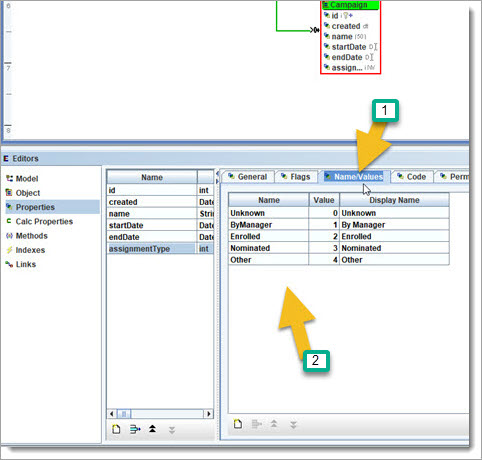
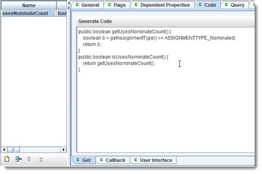
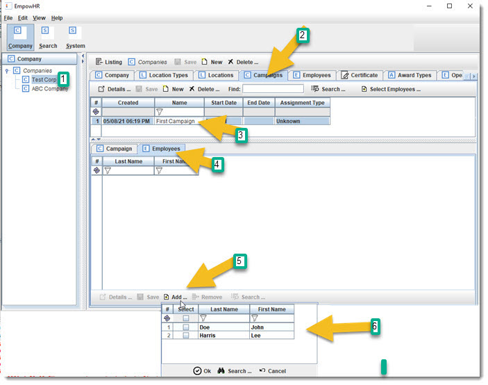
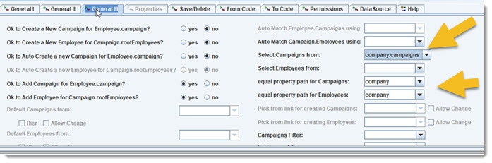
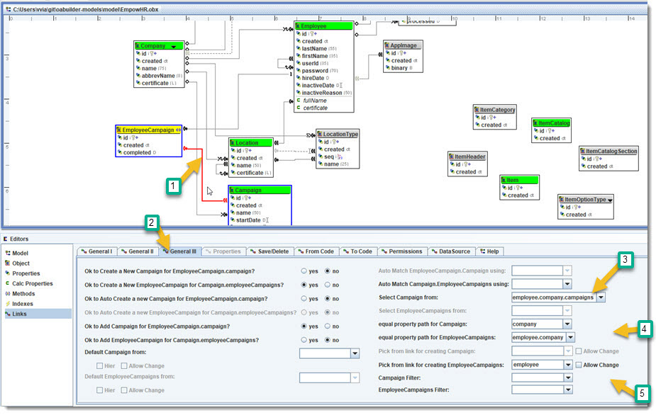
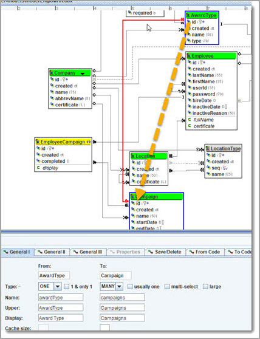
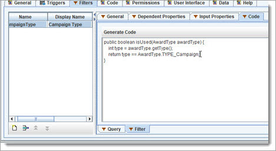
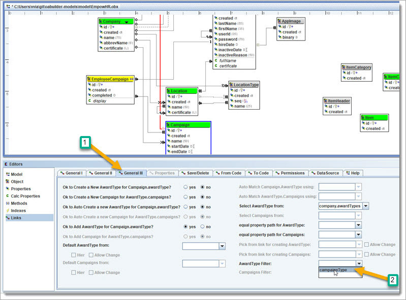
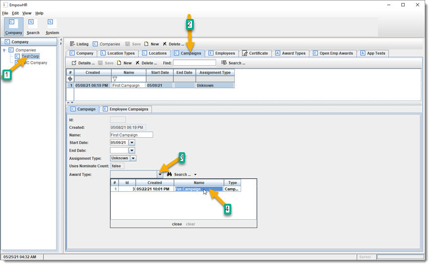

BizRule: "Companies have their own Campaigns, that their Employees are assigned to by one of the following: all active Employees,
assigned by Managers, enrolled by Employee, or nominated by X number of other Employees."
BizRule: "Companies have their own Campaigns, that their Employees are assigned to by one of the following: all active Employees,
assigned by Managers, enrolled by Employee, or nominated by X number of other Employees."
Let's set up Campaigns.
BizRule: "Companies have their own Campaigns, that their Employees are assigned to by one of the following: all active Employees,
assigned by Managers, enrolled by Employee, or nominated by X number of other Employees."
The first thing we will do is create an "assignment type", for the type of method used for adding Employees to a Campaign.
Click on Campaign and add the
following new property "assignmentType", as type = "int",
under "Flags" tab, check "dont track primitive null",
and then match the "Name/Values" tab
with the following:

Add another property "nominateCount", for the number of nominations needed if type is Nominated.
Since this property is only needed for "type=nominated", then
we only want it to be visible in that case.
Create a Calculated Property, "usesNominateCount", type is boolean, "Dependent Properties" needs to have "assignmentType", and "Code" should match this:

Now, go back to "nominateCount" property, "Permissions" tab, and set "Visible Property" to "usesNominateCount".
Go to the UI, table columns and match:

 ReGen & Run and test Company Campaigns.
ReGen & Run and test Company Campaigns.

 Review: we now have a way for Companies to have Campaigns, which will allow Employees to be added based on the value of
Campaign.type.
Review: we now have a way for Companies to have Campaigns, which will allow Employees to be added based on the value of
Campaign.type.
Employees will be able to earn awards/points based on their completing assigned Campaigns, which will then allow them to go "shopping".
Next, we will be set up how Employees are assigned Campaigns.
 Discuss & Learn: First, let us take a break and discuss security and how it helps to build the Model, and how it works in
the application.
Discuss & Learn: First, let us take a break and discuss security and how it helps to build the Model, and how it works in
the application.
OABuilder lets you define a User object for the Model. This is the User that logs into the Application. This User could also be considered a "Context", which could be a person, another computer system, process, etc. It is treated as a User, and the application has methods to get and set the User, that is accessible by the Model and all the Application. Getting the UserContext returns who the current User is.
In this demo, we have been logging in as a User, and are able to navigate to most of the application data ... Companies, Campaigns, Employees, etc.
We also want our customers (Companies) to allow their Employees to login, and for them to stay within their "area", which would be under the Company that they work for, under their manager, and the rules set up based on that. So, we have two "user" sides to the Application. The first is the "our" company running the software, and the other type of user are the Employees of our customers.
So far, we have been building the demo and using the internal User, and have been using a desktop application for the user interface.
We want to have other types of interfaces.
To accomplish this, we have the Employee Object to allow our customers to have access, and will later be setting it up to drive a UI for this.
BizRule: allow Company Employees to login to a web or mobile App that allows them to manager their account and have limited
access to the employees that they manage. Also, we will want some Employees to have administrator access to their Company or Location.
Continue working on the Model: Let us add Employees to a Campaign, and later we will use the Campaign, AssignmentType and User (Context) to determine the rules for how this works.
BizRule: "Company can have all or a subset of their Employees assigned to Campaigns".
Create a one2many link Campaign and Employee, and name its campaign.employees.

We need to only allow Employees that are under the same Company as Campaign. Do this by setting the following link settings:

Discuss & Learn: the Link that we just created is "Campaign.employees" & the reverse "employees.campaign" was set up
to be a One2Many. An Employee can be added to the Campaign list of Employees by directly adding to the Campaign.employees or indirectly by setting the
Employee.campaign to a Campaign.
ReGen & Run and test Company.Campaigns has Employees ... and then we will talk about what is wrong and how to fix
it.

Review: we just created a link for "Company.campaigns have Company.Employees". There's a couple of problems.
1: the
"select Employees from" will use a dropdown to show all the Company Employees to select from. This could be a large list. We want it to use an Employee search instead.
2: the link needs to be of type Many2Many, since an Employee can be in multiple campaigns.
Let us go ahead and makes the changes for this. For #1, clear the value in the link's "select Employees from". This will "tell" the application to use a Search instead
of a dropdown/navigation. The "equal property" will make sure that the Campaign and Employee are from the same Company.

Now change the One2Many link "Campaign.Employees" to Many2Many link Campaigns.Employees

Also, changing the Link type auto resets the settings, so make sure that "select from" and "equal property path" matches the following:

ReGen & Run to test that "Company.Campaigns have Company.Employees" ... and "Company.Employees have Company.Campaigns".
Notice that adding an Employee to Campaign is now using an Employee search, and the Employee & Campaign must match the same Company. Adding an Employee to a
Campaign automatically adds the Campaign to the Employee's list of Campaigns - and vice versa. The same with removing.

Lots of arrows here - select Test Company, click on Campaign tab, select first Campaign, select Employees tab, click
add button to add Employees, from popup search click run search, multi select one or more Employees, and click Ok button.
Discuss & Learn: Many2Many links have a "special" requirement for storing to a database. Both Employee and Campaign have
their own tables, and another table is needed to store the relationship between the two. If the relationship is One, then the table uses a column that is a foreign key
into the other table's primary key. A link table is used for M2M relationships and stores the primary keys of both tables.
Look at the "DataSource" tab, which displays the Link Table information for creating the Database script. 
Check out the Model Changes tab, to see how it captured the change to create the Link table.
 CheckPoint #8 was created before starting this next section.
CheckPoint #8 was created before starting this next section.
Continue working on the Model:
Sometimes, a M2M relationship needs additional information. For our
"Employees.Campaigns" Link, we want to know if the Employee participated/completed the Campaign.
To do this, we will remove the M2M link we just created, and instead create a "Link Object", which is just a normal Object like the others, and it will look like the following.
Add new Object, and new Property "completed" (Date).

The Links are a little more complicated, since we are having it "act" like a M2M relationship, and using a middle object with O2M link between it and the other Objects, which forms an extended M2M link.
What we are saying here is that "Employees have many Campaigns and for each we have a completed date".
And the reverse "Campaigns have many Employees and for
each we have a completed date".
And: the Employees and Campaigns must be from the same Company.
We now have the Object EmployeeCampaign links to
"Employee.Campaigns" and the reverse "Campaign.Employees", to form an extended M2M relationship.
We have also set it up so that Campaign.Company and Employee.Company must match:
"Employees can only be assigned to Campaigns from their Company", and
"Campaigns can only add Employees from their Company".

qqqqqqqqqqqqqqqqqqqqq
Note: this shows Employee and
Campaign must come from same Company. And, that the user should pick a Campaign to create a new EmployeeCampaign.

Notes: this also shows Employee and Campaign must come from same Company. And, that the user should pick an Employee
to create a new EmployeeCampaign.
"Select Campaigns from" is used so that an Employee can use a dropdown list of their Company's Campaigns to choose from.
Review: A Link Object is used to form an extended ManyToMany relationship between two Objects and requires each
relationship object. In our example, "Employees have many Campaigns" is a M2M by using the EmployeeCampaign Object.
Couple more things before we run: set up the UI for the EmployeeCampaign to include the Employee & the Campaign in the table columns.

create a EmployeeCampaign calculated property "display", that uses (dependent properties) Employee.fullName and Campaign.name, and then use it as the UI display.


ReGen & Run: test to see how an Employee can be added to a Campaign and how a Campaign can be added to an
Employee.
Review: used an extended Link to form a M2M relationship with an Object in the middle.
continue: set up the AwardType that an Employee will receive when they complete a Campaign.
Create a new link "a Company Campaign can have a Company AwardType assigned to it", Campaign.AwardType so that it has the following:
draw a link from
AwardType to Campaign ... so that it creates a O2M link.

Go to the "General" tab, and set the "Create method AwardType.getCampaigns" to "no".

This is "saying" that we
dont need a getCampaigns from AwardType. If left to "yes" (which is ok), then the user would be able to see the Campaigns that and assign Campaigns to an AwardType. By
setting to "no" were saying that we want to pick/assign an AwardType from the Campaign.
Go to the "General III" tab and set the property path for picking an AwardType.
This is saying "a Company Campaign can be assigned a Company AwardType".

Before rerunning, go to AwardType and add a new "type", "Campaign":

ReGen & Run: go to a Company Award Types, and create a new one.

Go to Company Campaigns tab, select the Campaign, and assign an AwardType to it.

One more thing, we want to add a new filter, so only AwardTypes with type=Campaign can be selected.
Select AwardType Object, and select the "Filters" tab.
Create new filter "campaignType".
For "Dependent Properties" choose "type".
Select
"code" tab, then "query" subtab, click "generate code", and update code to match:

Select "code" tab, then "Filter" subtab, click "generate code", and update code to match:

Use that new Filter: click on the Campaign.AwardType link, and make the following change:

ReGen & Run: set a the AwardType for a Campaign, and notice the new Filter working.

Review: we have a new link Object "EmployeeCampaign", that is connected with Employee and Campaign, that is forming a M2M
relationship between Employees and Campaigns. This "relationship pattern" is an extended M2M.
CheckPoint #9 created.